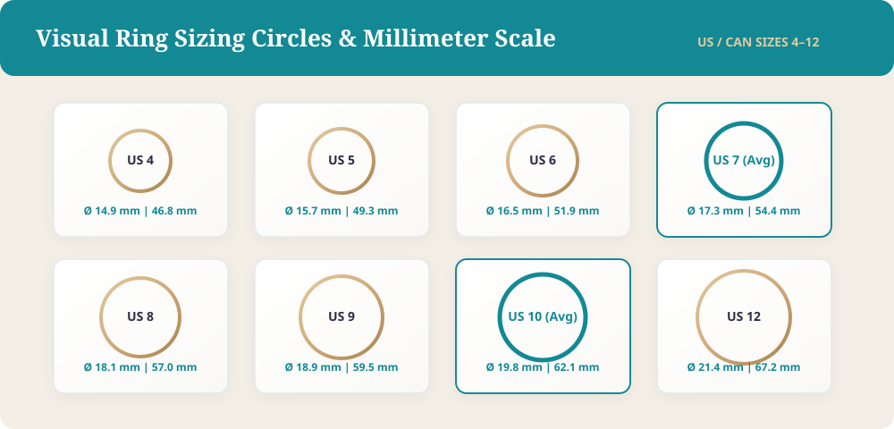

1. Introduction: Choosing Your Forever Band
Shopping for your wedding bands should be one of the most delightful milestones of your engagement journey. Unlike your flower arrangements or reception menu, your rings are designed to last a lifetime. They serve as daily reminders of your commitment, worn through everyday routines, celebrations, and decades of milestones.
However, because shopping for fine jewelry is new territory for many couples, it is surprisingly easy to make missteps. From sizing blunders to unexpected metal reactions, everyday slip-ups can turn an exciting purchase into a source of stress or unexpected expense. Becoming aware of the most common wedding ring mistakes will help you shop with confidence, protect your hard-earned budget, and ensure you pick rings that feel just as good thirty years from now as they do on your wedding day.
Here are the ten most frequent mistakes couples make when choosing a wedding ring—and exactly how you can avoid them.
1. Not Setting a Realistic Budget Early
It is easy to focus all your energy and finances on the engagement ring and reception venue, treating wedding bands as a quick afterthought. Many couples leave ring shopping until just weeks before the ceremony, only to discover that fine metals and stones cost more than anticipated. Rushing the purchase without a defined budget often leads to impulsive overspending or settling for inferior craftsmanship.
Your wedding bands represent approximately 3 to 5 percent of a typical wedding budget. Establishing your spending limit well in advance allows you to explore custom details, quality metals, or diamond accents without financial strain.
How to avoid this mistake:
- Set your numbers early: Determine your combined budget for both bands at least four to six months before the wedding day.
- Account for extras: Leave room in your budget for professional resizing, personalized inside engraving, sales tax, and annual jewelry insurance.
- Prioritize daily value: Remember that you will wear this piece every single day, making cost-per-wear an important consideration over short-term savings.
2. Guessing or Rushing Your Ring Sizing
One of the most persistent wedding ring mistakes is simply guessing your finger size or relying on a flimsy printable paper sizer downloaded online. Your ring fingers naturally fluctuate in size throughout the day based on temperature, physical activity, salt intake, and seasonal humidity changes.
A ring that fits snugly on a chilly morning might feel uncomfortably tight after an evening workout or during summer travel. Choosing the wrong size not only risks painful circulation or losing your band entirely, but repeated resizing can also weaken certain delicate ring styles or intricate pavé settings.

How to avoid this mistake:
- Measure multiple times: Get sized professionally by a local jeweler at two different times of day, ideally in the afternoon when your fingers are at an average resting size.
- Factor in band width: Wider bands (over 5mm) fit noticeably tighter than slender bands. Always request to be measured with a wide-band sizing tool if you plan on buying a broader ring.
- Avoid home paper sizers: Never rely on printable paper strips or string measurements, as they stretch easily and cause inaccurate sizing. Check our dedicated Ring Size Guide for exact conversions.
3. Ignoring Your Lifestyle and Daily Habits
It is easy to fall in love with an exquisite, intricate design under bright showroom lighting, forgetting how that ring will interact with your daily routine. If you work in healthcare, train in athletics, do gardening, or work with heavy tools, delicate settings with exposed stones can quickly snag, scratch, or warp.

Choosing a wedding ring requires balancing romantic aesthetics with day-to-day practicality. A ring that requires constant removal or makes you nervous during basic chores will quickly become a burden rather than a joy to wear.
How to avoid this mistake:
- Assess your routine honestly: Consider your occupation, fitness routines, and creative hobbies before choosing your design and silhouette.
- Consider low-profile settings: If you work with medical gloves or machinery, opt for smooth bezel settings, flush channel bands, or classic unadorned metal bands.
- Adopt an alternative band: If you have an intense trade or active lifestyle, consider a durable silicone backup ring for workouts and manual tasks to keep your precious band safe.
4. Choosing the Wrong Metal for Your Needs
Many couples select a metal purely based on color without reviewing a wedding ring metal guide. Different metals possess unique densities, hardness levels, maintenance requirements, and hypoallergenic properties. For example, 14k gold is significantly harder and more scratch-resistant than soft 18k or 24k gold, making it ideal for active lifestyles.

Furthermore, white gold requires periodic rhodium replating every few years to maintain its bright silver sheen. Meanwhile, contemporary metals like tungsten carbide and titanium are virtually scratch-proof but cannot be resized using traditional bench jeweler tools in the future.
How to avoid this mistake:
- Evaluate maintenance: Decide whether you are comfortable sending white gold for routine replating, or if naturally white, low-maintenance platinum better suits your preferences.
- Check for skin sensitivities: If you have sensitive skin or a nickel allergy, choose hypoallergenic metals like platinum, palladium, or high-karat nickel-free yellow gold.
- Weigh future resizing needs: Keep in mind that your finger size will naturally shift over decades, making traditionally resizable metals like gold and platinum more versatile over a lifetime.
5. Overlooking Band Width, Thickness, and Comfort Fit
When reviewing wedding ring buying tips, interior contour and proportional dimensions are frequently overlooked. Traditional "standard fit" bands have a flat interior surface that rests flush against the skin, which can trap moisture and cause skin irritation over long days of wear. In contrast, "comfort fit" bands feature a gently domed interior that glides smoothly over knuckles and sits comfortably on the finger.

Similarly, selecting an improper band width can throw off your hand's natural proportions. A delicate 2mm band can look lost on a broad hand, while a heavy 8mm band may feel cumbersome on shorter fingers. Learn more in our Comfort Fit Wedding Bands Guide and Wedding Band Width Guide.
How to avoid this mistake:
- Choose comfort fit: Whenever possible, specify a comfort-fit interior, especially on rings measuring 4mm or wider.
- Try diverse widths: Test sample bands ranging from 2mm to 8mm in person to determine which profile looks proportionate to your hand.
- Examine ring thickness: Ensure the ring's profile height is not so tall that it uncomfortably pinches your adjacent fingers when closing your hand.
6. Failing to Harmonize the Band with the Engagement Ring
One of the most frequent bridal wedding ring mistakes is buying a wedding band in isolation without testing how it sits against the engagement ring. Many engagement rings feature low basket settings that prevent straight bands from sitting flush, creating an awkward, uneven gap between the two rings.
Additionally, pairing mismatched metal hardnesses can cause long-term structural wear. For instance, wearing a hard platinum band directly against an 18k yellow gold engagement ring can cause the harder metal to gradually wear down the softer gold prongs over years of friction.
Metal Hardness Friction Matrix (Mohs & Vickers Scale): Harder Metal (Platinum / 14k Gold) ---> Abrades ---> Softer Alloy (18k Gold / Silver) Result: Thinning prongs, loosened stones, and uneven contact friction. Solution: Match identical metal karats or introduce an ultra-thin soldered buffer spacer.
How to avoid this mistake:
- Always try rings on together: Bring your engagement ring along to every appointment to test how the pair sits together.
- Consider contour or chevron shapes: If your center stone setting is low, explore curved, contoured, or open shadow bands designed to trace the silhouette of your ring.
- Match metal karats: Pair metals of similar hardness to prevent one ring from abrading the other over daily wear.
7. Skipping Quality Certifications and Hallmark Verifications
When purchasing precious jewelry, never take advertised claims at face value without physical proof. Every authentic gold, platinum, or palladium ring will feature official hallmark stamps inside the shank indicating metal purity (such as "750" for 18k gold, "585" for 14k gold, or "PT950" for platinum) alongside the maker’s trademark.
Skipping quality checks or buying uncertified stones can leave you with porous castings, cloudy melee diamonds, or brittle alloys that warp after minor impacts. Quality control ensures you are receiving genuine precious materials that hold up over decades.
How to avoid this mistake:
- Inspect interior stamps: Use a jeweler's loupe to verify the purity hallmark and manufacturer's trademark inside the band.
- Demand diamond grading: If your wedding band contains significant accent stones, confirm the quality grade, color range, and sourcing standards of the diamonds.
- Work with vetted jewelers: Look for memberships in reputable industry bodies such as Jewelers of America or the American Gem Society.
8. Buying Online Without Verifying Policies or Sizing Guarantees
Online jewelry shopping offers vast variety and attractive pricing, but purchasing without reading the fine print is a gamble. Buying wedding rings online without clear return windows, warranty terms, or resizing policies can leave you stuck with an unwearable ring.
Some retailers treat custom-engraved or eternity bands as final sales with no returns allowed. If an eternity band with diamonds around the entire perimeter arrives slightly too small, traditional resizing is generally impossible, forcing an expensive remake.
How to avoid this mistake:
- Read return policies thoroughly: Verify that you have at least a 30-day return or exchange window from the date of physical delivery.
- Check resizing support: Confirm whether the merchant provides complimentary resizing, exchanges, or store credit within the initial months of ownership.
- Avoid final-sale custom pieces early: Avoid ordering customized engravings until you have tried on the physical ring and confirmed the exact fit.
9. Chasing Short-Lived Trends Over Timeless Personal Style
Jewelry design trends come and go—from ultra-thin delicate whisper bands to bold enamel coatings and unconventional textured treatments. While contemporary trends can be visually striking, ultra-thin bands under 1.5mm can easily bend or snap under normal hand pressure.
Similarly, unique surface finishes such as high-matte, florentine, or black rhodium plating naturally burnish and fade over months of wear, requiring frequent professional reapplication. Choosing a ring that reflects your enduring personal taste ensures you won't fall out of love with it as styles evolve. You can also explore our Wedding Ring Finish Guide to understand surface wear.
How to avoid this mistake:
- Ensure structural integrity: Avoid bands narrower than 1.8mm to 2.0mm if they will hold pave stones, ensuring long-term durability.
- Expect natural patina: Understand that all surface finishes naturally change over time through contact with everyday surfaces.
- Choose authentic taste: Choose a design you genuinely love rather than what is currently dominating social media feeds.
10. Neglecting Ring Insurance, Cleaning, and Maintenance
Many couples assume their journey ends once the wedding rings are slipped on at the altar. Unfortunately, failing to protect and maintain your rings is one of the most heartbreaking wedding ring mistakes you can make. Everyday activities like swimming, lifting weights, or gardening can cause lost rings, chipped stones, or loose prongs.
Furthermore, relying solely on basic homeowners or renters insurance often leaves you underprotected, as standard policies frequently have strict coverage limits or exclude accidental loss outside the home. For detailed cleaning steps, refer to our Wedding Ring Care Guide.
How to avoid this mistake:
- Secure specialized insurance: Insure your rings through an inland marine rider or specialized jewelry insurer that covers accidental loss, theft, and damage worldwide.
- Schedule yearly checkups: Visit a jeweler once a year for an inspection of prongs, channel walls, and setting integrity.
- Clean rings gently at home: Soak your rings in warm water with mild dish soap and gently scrub with a soft-bristled baby toothbrush to remove oils and restore brilliance safely.
Summary: Mistakes vs. Best Practices Comparison
| Decision Factor | Common Mistake | Recommended Best Practice |
|---|---|---|
| Sizing Method | Paper strips or string measurement | Calibrated metal ring gauges at varied times of day |
| Interior Geometry | Flat standard fit for wide bands (5mm+) | Comfort-fit domed interior for smooth knuckle glide |
| Metal Harmony | Mixing platinum directly against soft 18k gold | Matching alloy hardness to eliminate abrasive wear |
| Alternative Metals | Expecting tungsten or titanium to be resized later | Choose precious metals (gold/platinum) for lifelong sizing |
| Online Buying | Ordering engraved eternity bands with no returns | Verify 30-day exchange windows before finalizing custom details |
Conclusion: Choosing Your Forever Ring with Confidence
Choosing a wedding ring is a meaningful journey that blends deep sentimental value with everyday practicality. By steering clear of these common wedding ring mistakes—such as guessing your size, disregarding your daily lifestyle, or skimping on quality checks—you can choose bands that bring you pride and lasting comfort every day.
Give yourself ample time, explore options as a couple, and seek knowledgeable guidance from experienced jewelers who prioritize your long-term satisfaction.
Are you ready to discover the perfect symbol of your partnership? Explore our curated collection of solid sterling silver and fine bridal rings today to find a ring you will cherish for a lifetime.
Frequently Asked Questions
How long before the wedding should we buy our wedding rings?
It is best to begin shopping three to four months before your wedding day, placing your final order at least six to eight weeks before the ceremony. This timeline accommodates custom sizing, inside engravings, and unforeseen shipping delays.
Can all wedding rings be resized in the future?
No. Traditional gold, platinum, and silver bands can usually be resized up or down by two sizes. However, alternative metals like tungsten and titanium cannot be resized, and full eternity bands with stones circling the entire band are difficult or impossible to alter.
Should our wedding bands match each other exactly?
Not necessarily. While some couples appreciate matching metals or design motifs, it is entirely acceptable to pick complementary or different metals that reflect each individual's skin tone, daily habits, and personal aesthetic.